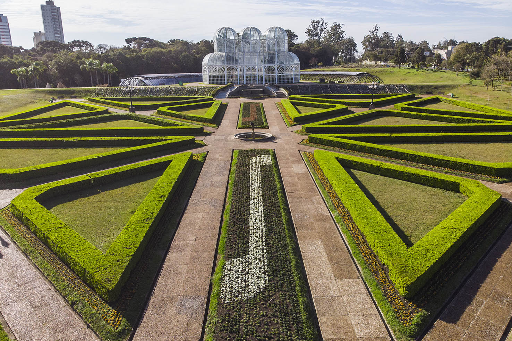
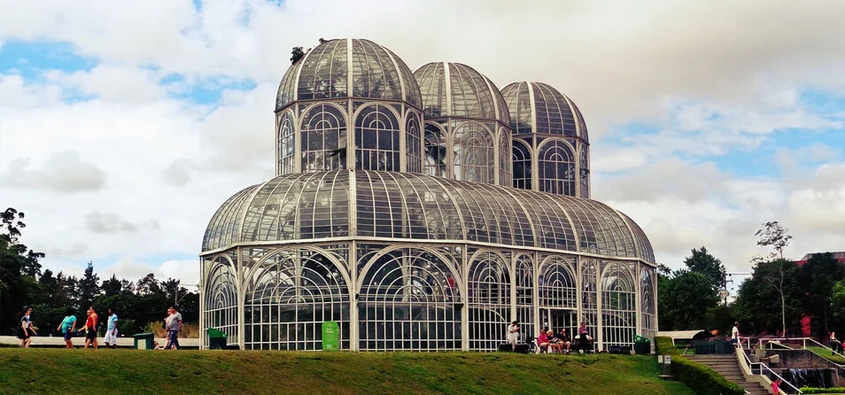
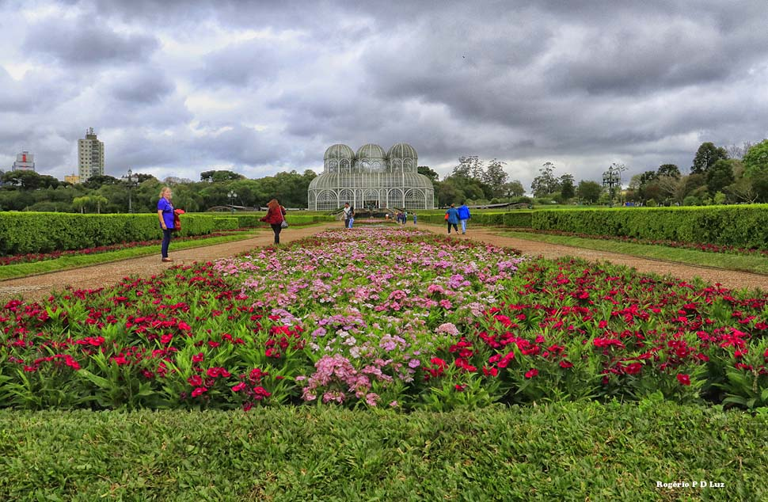

Sobre o Jardim Botânico
O Jardim Botânico é um espaço dedicado à preservação, pesquisa e educação ambiental. Ele reúne diferentes espécies de plantas, árvores e flores, proporcionando aos visitantes um contato direto com a natureza. Além de ser um local de lazer, também contribui para a conservação da biodiversidade e para a conscientização sobre a importância do meio ambiente.

História do Jardim Botânico
Os Jardins Botânicos surgiram com o objetivo de estudar, conservar e organizar diferentes espécies de plantas. Com o passar do tempo, esses espaços também passaram a ser importantes para a educação ambiental, pesquisas científicas e preservação da biodiversidade. No Paraná, o Jardim Botânico se tornou um importante ponto turístico e ambiental, reunindo áreas verdes e espécies de plantas e contribuindo para a valorização da natureza.

Importância artística e cultural do Jardim Botânico
O Jardim Botânico também possui grande importância para a arte e a cultura. Seus jardins, árvores, flores e paisagens servem como inspiração para fotografias, pinturas, desenhos e outras manifestações artísticas. Além disso, esses espaços ajudam a aproximar as pessoas da natureza e contribuem para a valorização da cultura e do patrimônio ambiental. Por isso, podem ser considerados lugares de lazer, conhecimento e inspiração.

Curiosidades
Curiosidade 1
O Jardim Botânico possui diferentes espécies de plantas e pode ser utilizado para pesquisas, educação ambiental e conservação da biodiversidade.
Curiosidade 2
Além de preservar a natureza, o Jardim Botânico é um espaço muito procurado para passeios, fotografias e momentos de contato com áreas verdes.